Manual Catalog Sets¶
Alation Cloud Service Applies to Alation Cloud Service instances of Alation
Customer Managed Applies to customer-managed instances of Alation
Manual catalog sets allow you to manage data duplication in your Alation instance by organizing identical data objects and keeping their catalog metadata consistent. For example, manual sets can be useful if you are maintaining several similar or replicated sources in your Alation catalog and need the catalog field values on all the child objects of these sources to be the same.
Creating a Manual Catalog Set¶
Open the Catalog Sets page. See Catalog Sets for details.
On the Catalog Sets page, click the add icon on the upper right:
This displays,
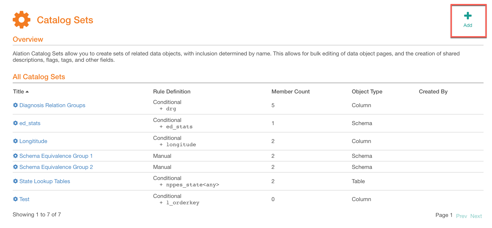In the new catalog set editor that opens, click Manual:
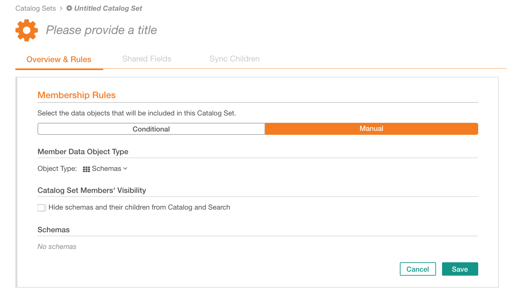Specify a title for your new set.
Under Member Data Object Type, select the type of data objects that you want to unite into this set. You can select:
Data Source/Catalog
Schemas
Tables
Columns
If you want to conceal the set members from the catalog and search, select the checkbox Hide schemas and their children from Catalog and Search.
Select the specific objects to be members of the set: click Add to open the list of catalog objects of the selected type and find and select the ones for this set:
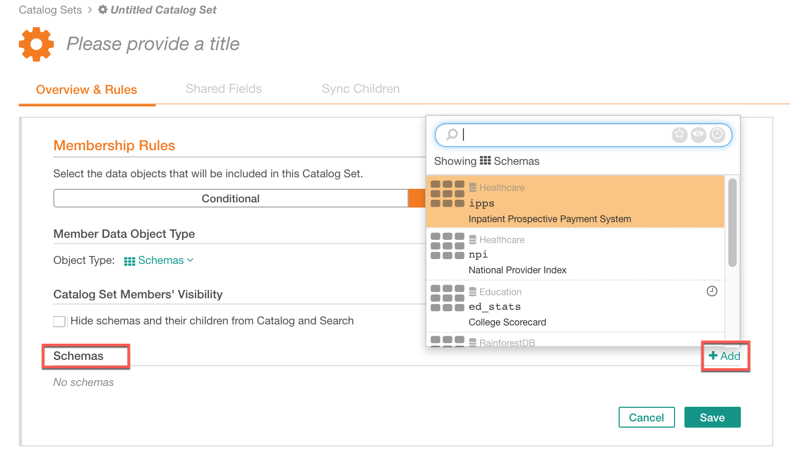Click Save. Your new set will be created and you will land on the**Overview and Rules** tab of its properties page:
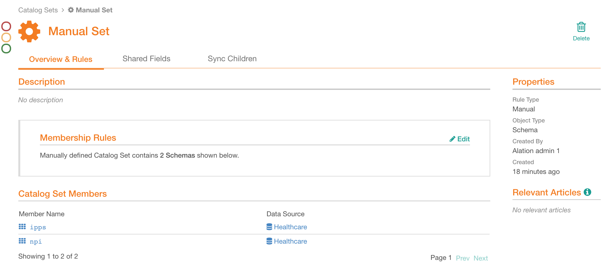Click the Shared Fields tab to bulk-edit fields on the set members. See Bulk-Editing Shared Fields for details:
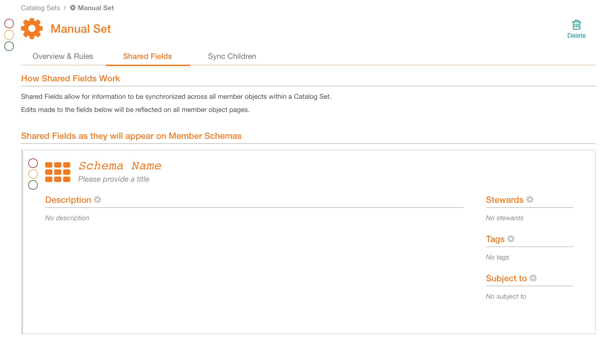Click the Sync Children tab to enable child objects synchronization. For details, see Metadata Synchronization Across Children.
Metadata Synchronization Across Children¶
Turning on metadata synchronization can help maintain consistency for identical child objects on the catalog set members. On the Sync Children tab, you can learn more by watching an explanatory video under the Show more about metadata synchronization link:
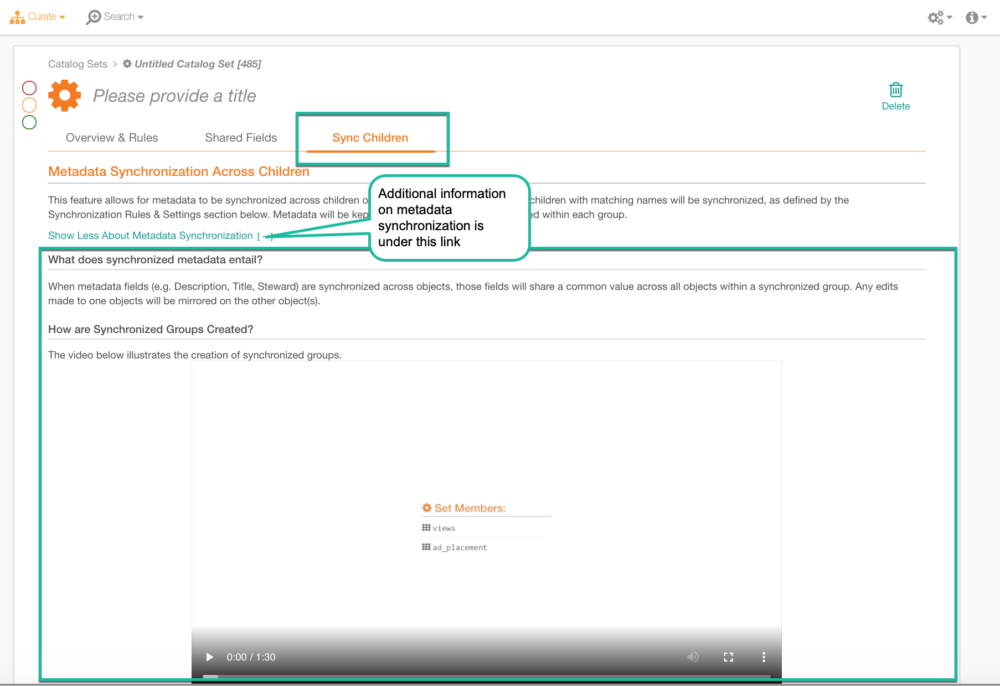Synchronization means sharing a common field value on all objects in a synchronized group of data objects. Any edits to the fields made on one object will be mirrored on the other object(s).
Metadata synchronization potentially impacts all child objects of set members as you can synchronize their successive levels down to the column level.
The names of child objects should exactly match for Alation to be
able to synchronize them. For the second and other successive levels,
the parent object names should also exactly match. For example, in a
manual catalog set for schema objects, the first-level child objects
are Tables, and the second-level child objects are Columns. The columns
and their parent tables should both have matching names for
synchronization to happen on the column level. If this set
unites schemaA and schemaB and both these schemas have a
table called tableC with a column called id, then
columns schemaA.tableC.id and schemaB.tableC.id can be
synchronized as the names of the columns match and the names of their
respective parent tables also match.
Child objects with identical names will be synchronized on the fields you select for synchronization. You can select fields under Synchronization Rules and Settings on the Sync Children tab of the manual set page:
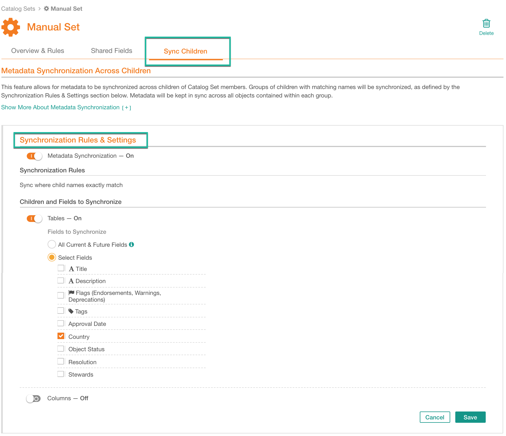When synchronization is turned on, Alation will find child objects with exactly matching names under the catalog set members. For these objects, single-value field values will be permanently overwritten by master values. Multi-value field values will be united across all synchronized child objects and display a list of values from all synchronized objects. Master in this case is the first catalog set member added to the set. For example, in a set like this:
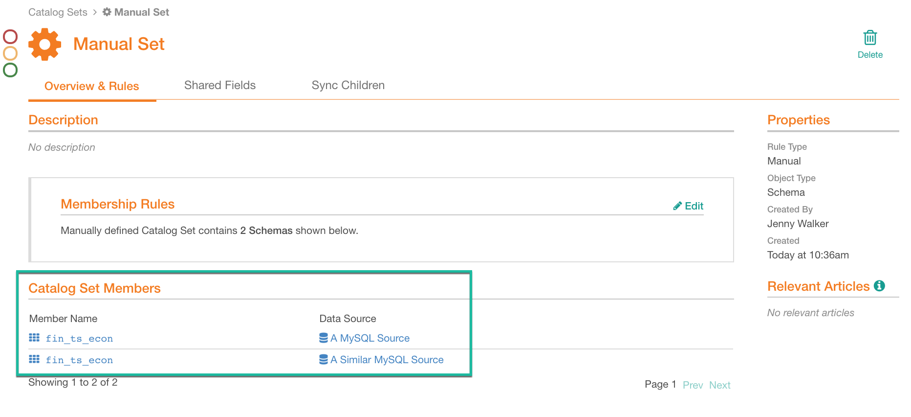The schema that appears first in the list under Catalog Set Members will be treated as a master set member. The values of its child objects will overwrite the values on identical child objects under the other set members.
If any field on child objects of the master object does not have a value, Alation will apply values from the similar child object on the catalog set member that is the next in this list.
To enable metadata synchronization for a manual catalog set,
Open the Sync Children tab of a manual catalog set page and click Edit for Synchronization Rules & Settings section:
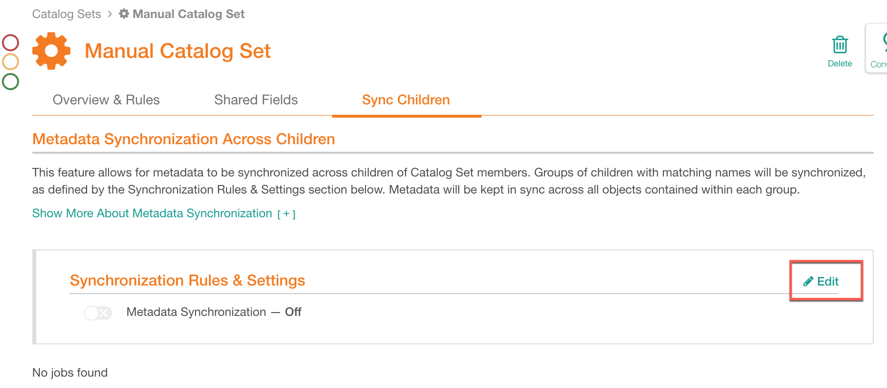Toggle the Metadata Synchronization switch on. This will reveal the child object settings:
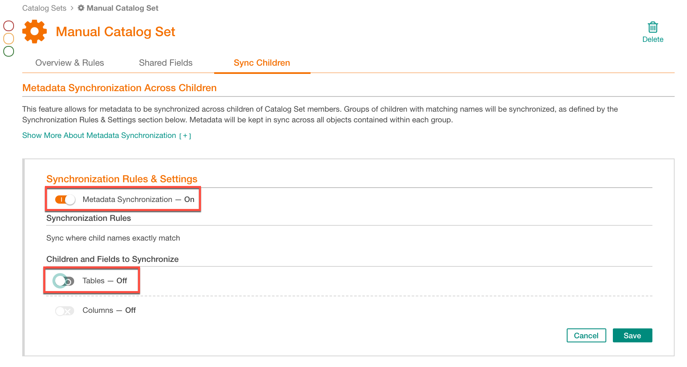Under Children and Fields to Synchronize, enable the child levels to be synchronized by turning on the respective switches. Note that each successive level of children will be enabled only after the parent level is enabled. For example, columns cannot be synchronized if synchronization for the table level is off.
For each of the child levels, select the fields to be synchronized. You can either use the All Current & Future Fields option or select specific fields by selecting their respective checkboxes:
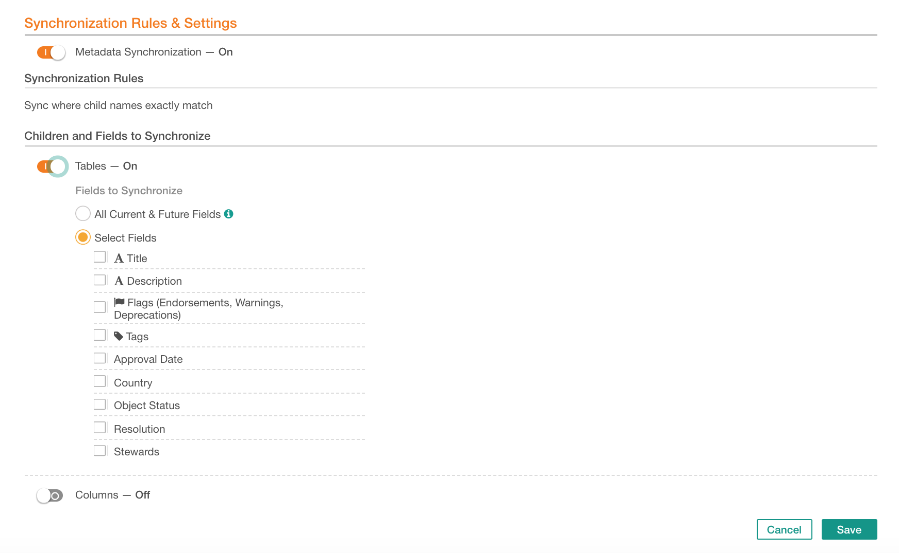Note
The fields you find here are the custom and built-in fields currently found on the object template of the corresponding data object type.
If you select All Current & Future Fields, then all current fields and new fields that may be added to the template in the future, will be synchronized.
Click Save and, in the confirmation dialog that opens, confirm synchronization. This will trigger a new synchronization job. The history and details of such jobs are available under Synchronization Status:
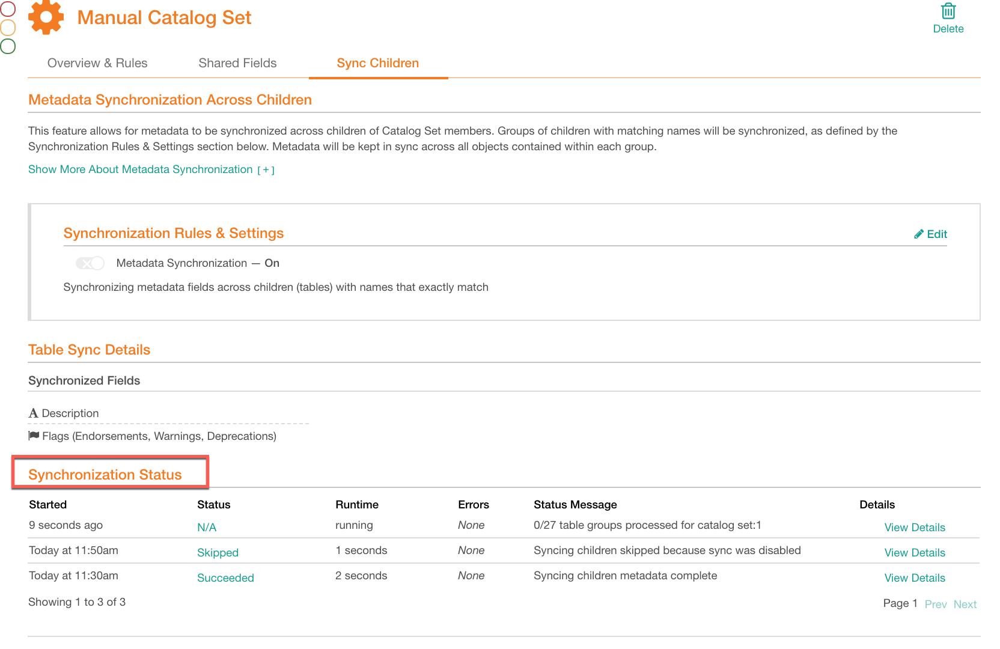
The synchronization rules that you have set up will be displayed under <Data Object Type> Details section under Synchronization Rules and Settings:
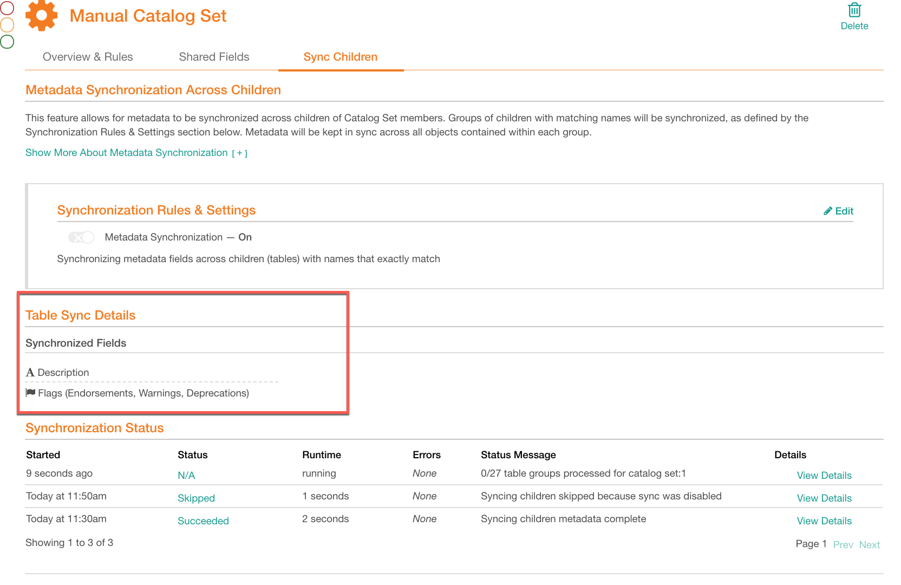When the synchronization job has completed, identical child objects will become synchronized. Now, when you edit a catalog field value on one of the child objects, this value will be mirrored on the other objects synchronized with this one.
Note
Currently in Alation UI, there is no indication of synchronized child objects, and the synchronized values do not stand out. When you edit a value on a synchronized child, it will be propagated to all other child objects with the same name, but on the catalog page of this object, there is no “sign” of this value belonging to a synchronized set.
On how to turn off synchronization, see Updating a Manual Catalog Set.
Updating a Manual Catalog Set¶
To edit a manual catalog set, on the Catalog Sets page, click the settings icon to open the Admin Settings > Catalog Admin > Catalog Sets or from the Curate menu > Catalog Sets to find the manual set you want to edit and click its title:
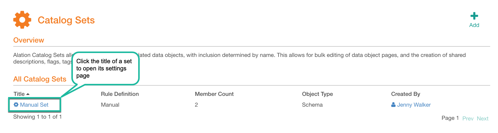The settings page will open:
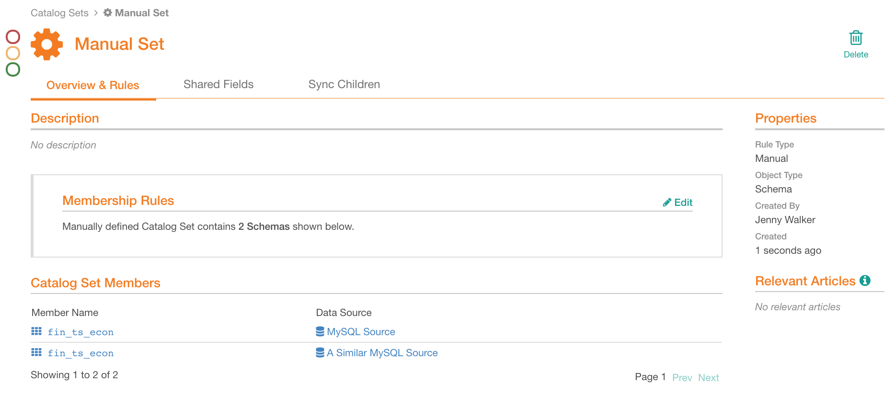On the settings page, you can change the title of the set and its properties on tabs:
Overview & Rules
Shared Fields
Sync Children
Title¶
Hover over the current title then click the Edit icon to enable editing:
This displays:
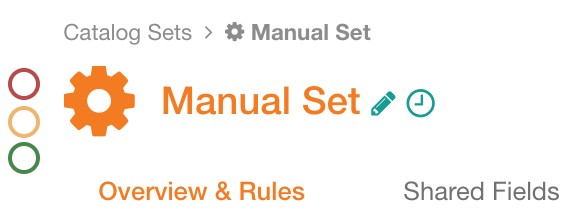Overview and Rules¶
Description¶
Hover of the Description field to reveal the Edit icon on the right and click it to enable field editing:
Remember to save the changes to the field:
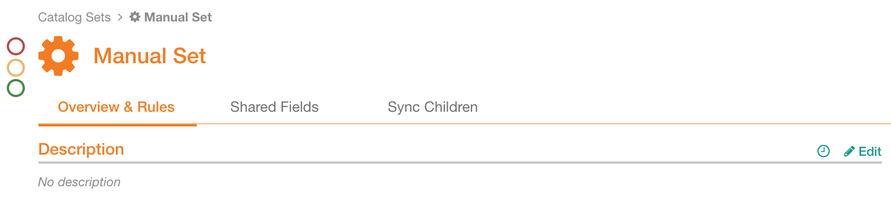Membership Rules¶
Click Edit on the right to open the Membership Rules editor:
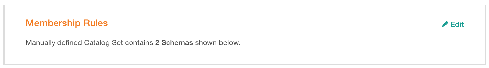To change visibility settings for the set members, select or clear the Hide schemas and their children from Catalog and Search:
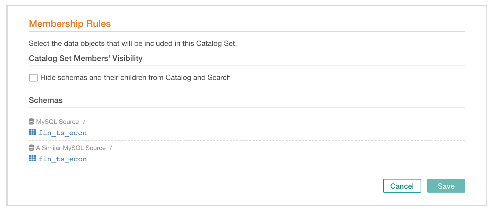To add catalog set members, hover over the <Data Object> title to reveal the Add button on the right and click it to open the data object list. Select the new set members from this list:
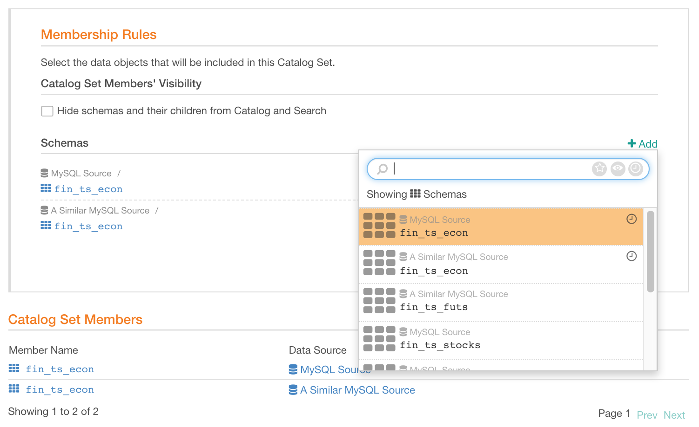To remove set members, hover over the data object you want to remove in the Catalog Set Members list, and click the remove icon X for this object:
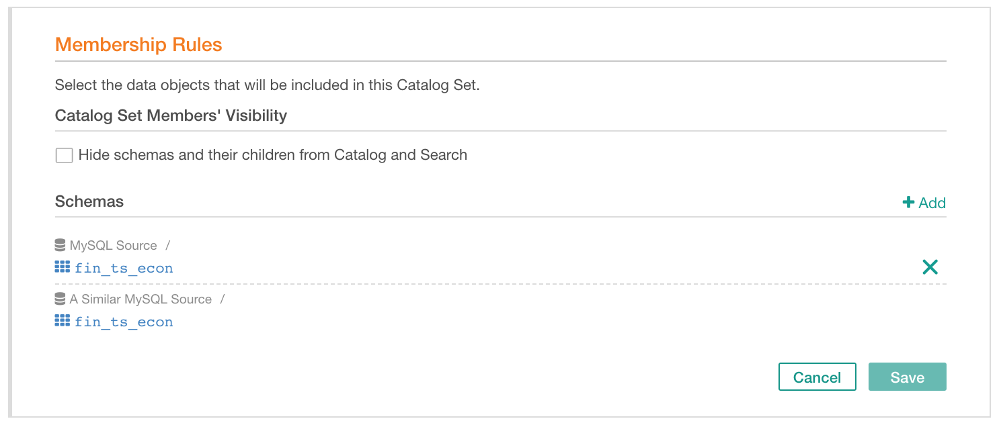Click Save on the bottom right to apply your changes to the set.
Sync Children¶
On the Sync Children tab, you can enable/disable child object synchronization and change the sync rules by redefining the fields to synchronize or by changing the number of child levels you want to be in sync:
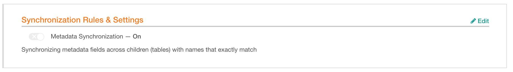To disable synchronization, turn off the Metadata Synchronization switch.
When you disable synchronization, the child objects become independent of the set and can be edited individually. The values that may have existed before the synchronization was turned on will not be restored.
For more details on synchronization rules, see Metadata Synchronization Across Children.
Deleting a Catalog Set¶
To delete a manual set, click Delete on the upper right:
Confirm deletion:
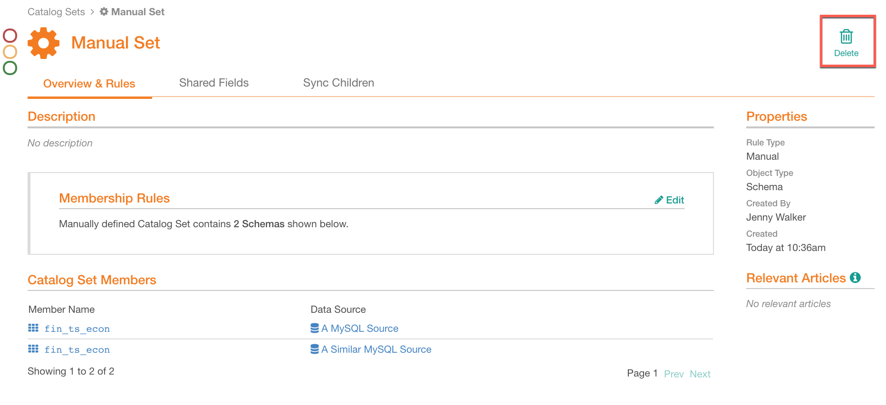